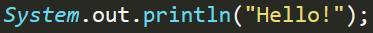
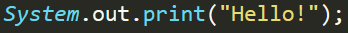
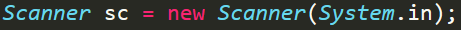
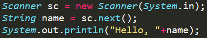
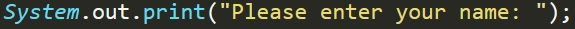

General
When making applications we generally need to have some degree of interaction with the user, and one of the most basic methods of achieving this level of interaction is to output data to the terminal and allow our user to input data to our program when we need it. So doing both of these is what will be covered in this page.
Printing to the Terminal
When we want/need to show the user of our program some piece of information via the terminal we make use of our ability to print to the console. So, the syntax to print the String "Hello!", in Java, is as follows:
With this basic instruction we are now able to print data to our program's terminal. On it's own it's a pretty restrictive feature but remains a fundamental part of learning any programming language.
It should be noted that the bit that's being printed, in this case Hello!, is a string which is why it's encased within speechmarks. (String is a Data Type and will be covered further in Variables)
It should be noted that the print statement listed above places a new line at the end of the text that is printed automatically. If this is an undesired effect then it can be negated by simply removing the ln (Which stands of line i.e. print line) in the statement, like so:
By playing around with the two print statements we can notice a number of things that remind of their nature, for example if we were to run the following program:

It would produce the following output:
This is line 1! This is still line 1!
This is line 2!
Inputs
In order to make an interactive application we need to be able to take inputs from our user. We can do this via the console, in Java, by using the Scanner package. Before we're able to to actually use the Scanner however we need to a bit of set-up if you like. This just means that we're going to create a Scanner within our scope so that we can use it when we need.
So, to create a Scanner within our scope, named sc, we use the following piece of code:
In the above code we create a Scanner item called sc. Scanners can be used to do a number of different things however so we need to tell our program that we want to take the Data from the inputs of the terminal, which is what System.in does within the brackets.
Now that we have the Scanner object created (The technical term is instantiated) we're able to use it to collect inputs from the user! So we're going to make a very simple application that will take the user's name and print it back to them. To do this we write the following code:
Line 1 creates the Scanner object such that we're able to use it to read text that is inputted into the program via the program's terminal as previously explained
Line 2 creates a String variable (Variables and their respective data types will be covered further in variables) and assigns the value that's inputted by the user from the terminal.
Line 3 then prints the String "Hello, " and joins it with the String that is entered via the teriminal (Technical term for joining of strings is concatenation)
If I then run this program and enter my name, Mitchell, it would create the following output:
Hello, Mitchell
Prompting Inputs
When we used the Scanner in the previous piece of code it wasn't very informative or user friendly. We only knew that we were supposed to enter our name because we wrote the code with that intention. If someone else were to run this program without any insight into the code they would have no idea what they're supposed to enter. So, to resolve this we are going make a prompt that will instruct the user to enter their name.
A prompt is generally just a piece of informative text that tells the user what they're supposed to enter.
If we insert the following line of code into our program between lines 1 and 2
Now instead of simply having a blank screen when the user is expected to enter their name a piece of text will appear prior to them entering anything, instructing the user to enter their name. Once the user starts typing their name it will be placed after the string that we entered because we used a print statement instead of a println statement. Meaning that no new line is started by the print statement.